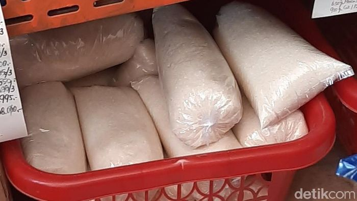
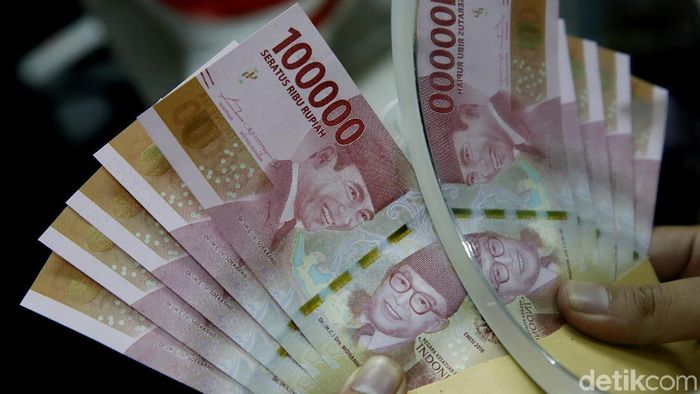

Terungkap! Ini Biang Kerok Harga Gula Mahal

Jakarta -
Satgas Pangan Kabareskrim Polri di Sumatera Utara menemukan pelelangan gula di atas harga eceran tertinggi (HET) Rp 12.500/kg. Pelelangan yang melanggar ketentuan dari pemerintah ini dilakukan oleh PTPN II.
Untuk menindaklanjuti pelelangan 'nakal' tersebut, Satgas Pangan sempat menyegel perusahaan pelat merah tersebut dengan police line.
"Satgas Pangan sudah melakukan penindakan di Sumatera Utara atas tindakan PTPN II yang melakukan lelang produk gula sebesar Rp 12.900/kg, bervariasi. Dan sempat kami lakukan police line," kata Daniel dalam konferensi pers virtual distribusi gula, Selasa (28/4/2020).
"Komitmen kami membayar tetap jalan," tegasnya.
Read More
Harap-harap Cemas Menanti THR Jelang Lebaran

Jakarta -
Bulan puasa telah tiba, namun banyak pekerja yang terancam tidak mendapatkan tunjangan hari raya (THR) Lebaran nanti. Pasalnya, pengusaha mengaku sudah tidak kuat lagi membayar THR karena lesunya perekonomian imbas virus Corona.
Ketua Umum Himpunan Pengusaha Pribumi Indonesia (HIPPI) Sarman Simanjorang mengatakan meskipun pengusaha tak mampu membayar THR untuk Lebaran, pihaknya mengatakan tidak akan melepas tanggung jawab.
Sarman mengatakan THR ini adalah tanggung jawab para pengusaha yang harus dilaksanakan. Namun, dengan adanya dampak virus Corona, dia meminta pekerja mau diajak bicara untuk mencari solusi bersama.
"THR ini tetap tanggung jawab kami para pengusaha dan ini diatur di undang-undang. Kami nggak akan lari dari itu. Tapi ingat kan ini ada kejadian luar biasa membuat pengusaha terpuruk, jadi kita mesti cari solusi bersama," ungkap Sarman kepada detikcom, Selasa (28/4/2020).
Read More